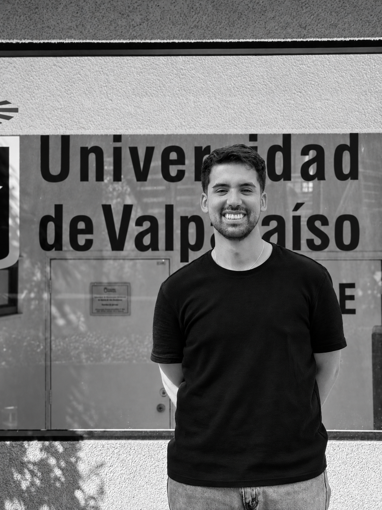

Sobre mí

Estudiante de Magíster en Matemáticas
Universidad de Valparaíso, Chile
Álgebra, combinatoria y teoría de representaciones.
Director: Diego Lobos Maturana.

Estudiante de Magíster en Matemáticas
Universidad de Valparaíso, Chile
Álgebra, combinatoria y teoría de representaciones.
Director: Diego Lobos Maturana.